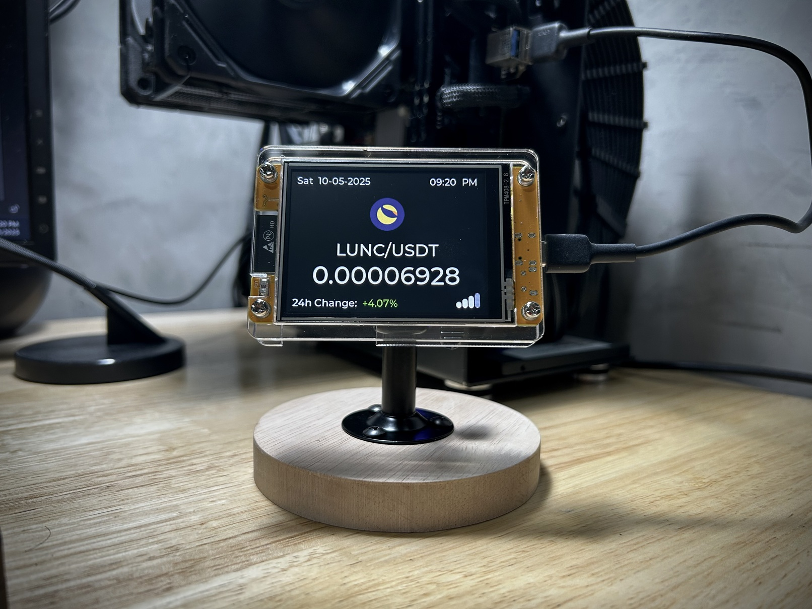
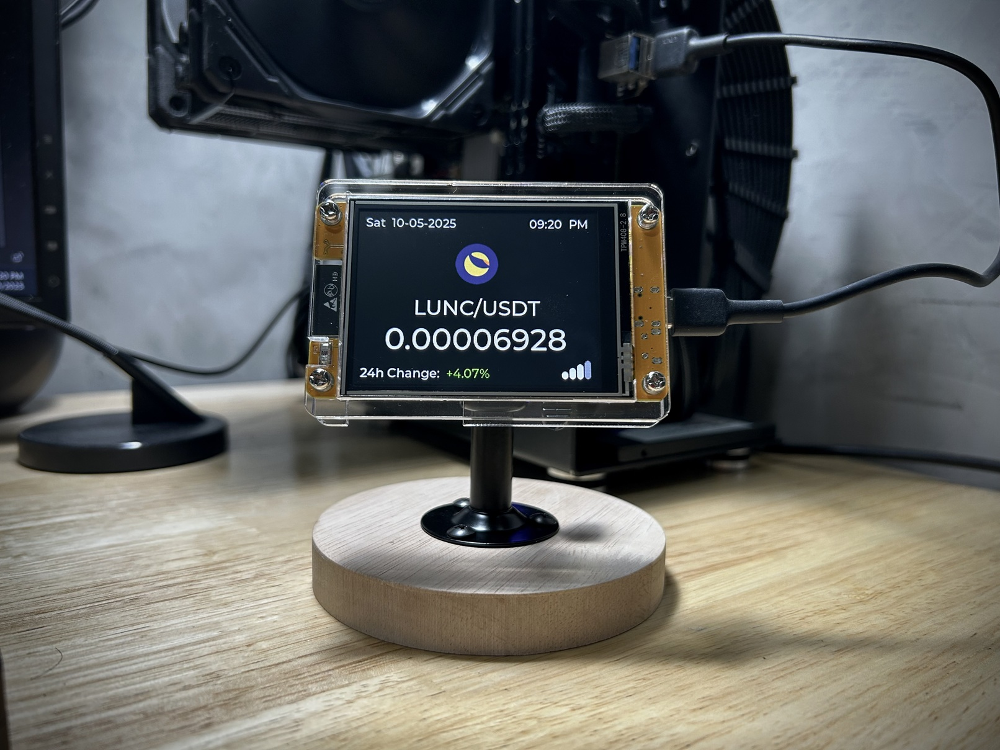
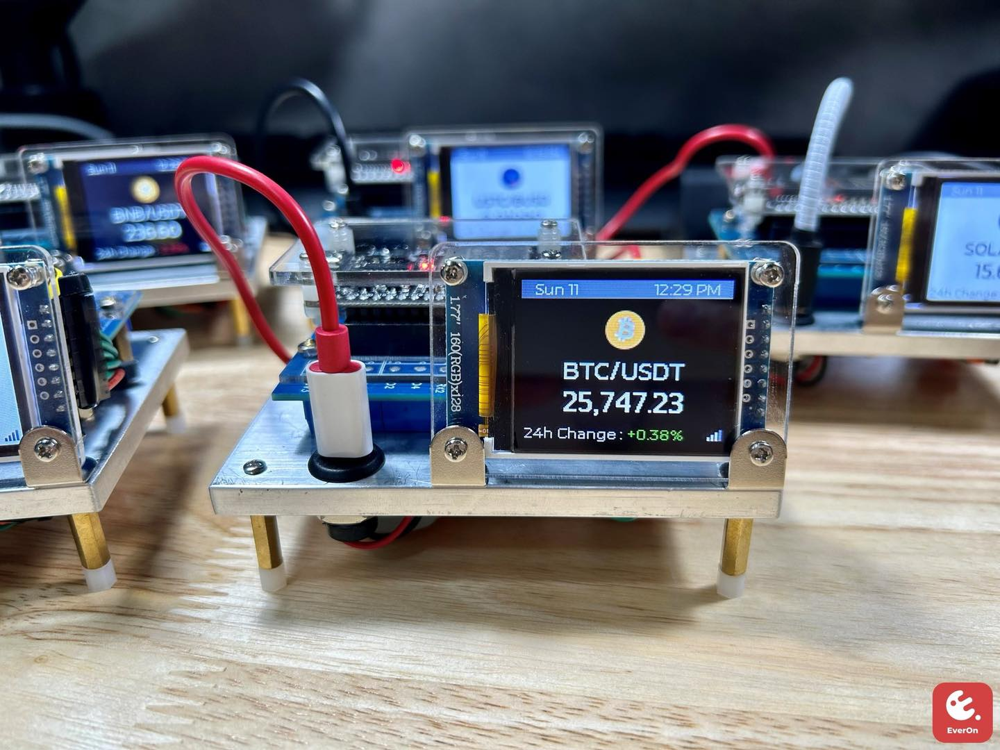
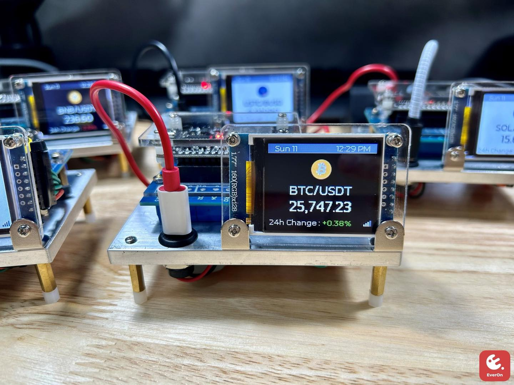

KEY SKILLS
Problem Analysis & Resolution
Strong analytical skills in identifying root causes and developing innovative solutions to complex challenges.
Strategic, Logical and Critical Thinking
Applies logical and critical thinking to support informed decisions and long-term planning. This involves analyzing situations, evaluating evidence, identifying risks, and developing well-reasoned strategies.
Process Improvement
Expertise in identifying inefficiencies and implementing enhancements to streamline workflows and increase overall productivity.
Adaptability & Flexibility
Highly adaptable to dynamic environments with a rapid learning curve, integrating new concepts and technologies seamlessly into workflows.
Decision-Making
Proven ability to make well-informed, timely decisions under pressure, balancing both short-term needs and long-term goals.
Effective Communication
Articulating ideas with clarity and precision, ensuring messages are effectively understood across all levels of an organization. Experienced in collaborating with diverse stakeholders and facilitating productive discussions to foster alignment and achieve shared goals.
Active Listening
Practiced in empathetic and active listening, ensuring thorough understanding of perspectives, enabling informed and relevant responses that build trust and foster collaboration.
Stakeholder Collaboration
Highly skilled in bridging communication gaps by presenting complex concepts in an accessible manner for both technical and non-technical audiences, ensuring shared understanding and effective decision-making.
Collaboration & Negotiation
Experienced in working cross-functionally, building partnerships, and negotiating mutually beneficial solutions.
Time Management & Prioritization
Strong organizational skills, able to manage multiple priorities and deadlines without compromising quality or attention to detail.
Creative Problem-Solving & Fast Learning
Quick to adapt and apply creative solutions to new problems while continuously learning and growing in both technical and business areas.
Relationship Building & Stakeholder Engagement
Skilled in approaching and building rapport with individuals across various organizational levels, ensuring effective collaboration, and fostering strong working relationships.
Keen Attention to Detail
Strong focus on precision and accuracy in all aspects of work, ensuring high-quality deliverables and the successful completion of tasks while minimizing errors. Able to identify potential issues or inconsistencies before they become problems, ensuring thoroughness and a commitment to excellence.
WORK EXPERIENCE
Hold full responsibility for all projects related to the Business Unit, Distribution Center (DC), Warehouse Management, the Product Lifecycle Management (PLM) system and Digital Transformation.
- Requirement Management & Analysis:
- Lead end-to-end business requirement gathering through structured interviews, workshops, and document reviews, applying effective communication and analytical techniques to capture a holistic view of operational workflows and system logic.
- Analyze current business processes to identify inefficiencies, pain points, and root causes, recommending practical and technically aligned solutions that fit within the existing system architecture and integration framework.
- Apply active listening and critical questioning techniques to accurately extract and validate stakeholder needs, ensuring that documented requirements reflect true business intent and operational priorities.
- Stakeholder Engagement:
- Collaborate closely with project sponsors, business owners, and subject matter experts (SMEs) to define project objectives, gather inputs, and develop comprehensive Business Requirement Documents (BRDs) that serve as a clear foundation for project delivery.
- Facilitate alignment between business needs and technical capabilities, negotiating where necessary to manage expectations, prioritize features, and deliver solutions that add measurable value.
- Process Understanding & Solution Design:
- Translate complex business requirements into user-centric solutions by applying UX/UI principles and usability best practices, ensuring solutions are not only functional but intuitive and easy to adopt.
- Utilize structured analysis and logical problem-solving techniques to evaluate and redesign processes, ensuring scalability, maintainability, and alignment with long-term business goals.
- Balance user needs, business objectives, and technical constraints through a systematic, collaborative solution design approach.
- Documentation & Alignment:
- Produce detailed functional specifications, workflow diagrams, user journey maps, and AS-IS/TO-BE models to ensure all stakeholders and project team members have a shared understanding of the proposed solution.
- Define project scope, conduct comprehensive impact analyses, and support internal project registration processes to maintain transparency, mitigate risks, and secure approvals from governance bodies.
- Vendor Management & Solution Evaluation:
- Work closely with external vendors for off-the-shelf solutions, ensuring alignment with project goals and system requirements.
- Assess multiple solution options, comparing the pros and cons of off-the-shelf solutions versus system customization, considering factors such as cost, scalability, implementation time, and long-term support.
- Leverage experience in negotiating and collaborating with vendors to customize solutions or integrate off-the-shelf products effectively into the project.
- Evaluate system customization options to ensure that tailored solutions align with business processes, offering flexibility and potential for future growth.
- Project Planning & Execution:
- Lead end-to-end project planning and execution, managing timelines, scope, budgets, and resources to ensure projects are delivered on time and aligned with business objectives.
- Coordinate cross-functional teams, including internal stakeholders and external vendors, to maintain alignment, resolve dependencies, and drive progress throughout the project lifecycle.
- Conduct requirement-gathering sessions, finalize and document user requirements, and secure formal sign-off to ensure clarity and stakeholder commitment.
- Initiate project kick-offs with clearly defined milestones, success metrics, and communication plans to set a strong foundation for execution and stakeholder engagement.
- Testing & Validation:
- Develop test cases, perform functional testing, and validate results during SIT and UAT to ensure system integrity and alignment with business needs and user expectations.
- Monitor Go-live and post-implementation phases to ensure smooth transitions.
- Communication & Reporting:
- Maintained regular communication with stakeholders, providing updates on project status, challenges, and milestones. Supported smooth transitions during Go-live and post-implementation phases.
- Solution Consultation & Support:
- Delivered expert consultation on solution architecture and integration design, ensuring seamless UX/UI alignment to drive user satisfaction and operational efficiency.
- Supported cross-functional projects by advising on system integration strategies, data mapping, and field alignment to ensure consistency and scalability across platforms.
- Data Management:
- Data cleansing and preparation activities, focusing on taxonomy, master data management, and system migration to ensure data accuracy and consistency. Handle the import and export of data using native methods, ensuring smooth integration.
- Integration & Testing:
- Validate integration data, refine system logic, and support API testing, Trigger API calls to interact with external systems, to ensure seamless data flows and optimal system performance.
- Finalize system integration flows and data mappings to deliver robust, cohesive solutions.
- Coding & Development:
- Design, develop, and maintain applications and tools that empower internal IT teams and business users to create, update, or manage data within the PLM (Product Lifecycle Management) system through secure and well-documented APIs. Ensure that these applications are user-friendly, reliable, and aligned with business workflows, enabling efficient data handling, minimizing manual errors, and supporting integration with other enterprise systems.
- As the PLM system serves as the master source for product data, ensure smooth, accurate, and timely data handoff to downstream systems such as ERP (Enterprise Resource Planning). Develop integration logic and automation scripts to synchronize data between PLM and ERP, supporting end-to-end data consistency across the organization’s core platforms.
- In addition, develop and deploy automation solutions such as file monitoring tools, scripted processes, and automated file transfers to streamline repetitive tasks and improve operational efficiency. Implement automated ticketing flows and API-driven updates, including features like delay mechanisms to enforce rate limits and prevent system overload. Continuously enhance code quality, adopt best practices, and collaborate with stakeholders to gather requirements and deliver scalable, resilient solutions that meet evolving business needs.
- Develop practical solutions and internal apps/tools that simplify daily tasks for the IT team, reduce manual workloads, and provide clear, reliable processes. Build custom utilities, dashboards, or scripts that improve monitoring, troubleshooting, and support activities, helping the team work more efficiently and comfortably in a dynamic environment.
- Designed and implemented custom scripts within the Zoho ITSM platform to meet strategic business requirements, integrating complex calculation logic and dynamic field behaviors to support advanced workflow automation.
- Customized modules, forms, and approval flows to align with organizational processes, improving system proficiency, reducing manual effort, and ensuring seamless alignment with business goals.
- Developed a lightweight web application using Python and simple HTML to assist business users in preparing and managing documentation required for customs declarations in foreign countries, streamlining compliance and reducing manual workload.
- Built a custom VPN auto-connect monitoring tool to automate connection checks and reconnections, significantly reducing reliance on expensive third-party VPN software and cutting recurring licensing costs.
Hold full responsibility in System Design, Business process and Technical Consultant.
- Warehouse Management System (WMS):
- Acquired in-depth knowledge of WMS software and WH inventory operation processes, enabling effective analysis and troubleshooting of operational inefficiencies.
- Collaborated with WH teams to identify process gaps and proposed customized solutions to streamline workflows and improve system performance.
- Supported system integration, including AS2, SFTP, and API interfaces, ensuring smooth data exchanges across platforms.
- Requirements Gathering and Solution Design:
- Gathered and analyzed customer requirements, designing tailored solutions to meet their unique business needs.
- Created system and process flow diagrams to align with stakeholders and ensure mutual understanding of workflows.
- Process Automation and Optimization:
- Automated repetitive processes using Python, Excel VBA, and macros, reducing manual intervention and improving efficiency.
- Developed scripts for simulating end-to-end transactional interfaces using raw XML files, enabling comprehensive testing and validation.
- Utilize a systematic approach to solution design, balancing user needs with technical feasibility and business objectives.
- System Integration and Troubleshooting:
- Conducted root cause analyses for issues in system integrations, including WMS-to-SAP or WMS-to-Ecommerce platforms (e.g., Lazada, Shopee, COL). Until the product master data and the sales transaction to the POS system.
- Monitored and resolved data exchange issues involving APIs and file formats like JSON and XML.
- Collaboration with WH Teams:
- CondWorked closely with GR/GI, Inventory, Transport, and Ecommerce teams to address operational challenges and implement solutions that enhanced day-to-day activities.
- Master Data Governance (MDG):
- Lead Material Master Data preparation, ensuring accuracy and readiness for operational use, including standard costs, material statuses, and collaborative data.
- Used SAP S/4 HANA, SAP GUI, and SAP Fiori extensively for material-related tasks, such as data creation, updates, and monitoring.
- Facilitated cross-functional communication with business users from Demand, Logistics, Accounting, Financial, and other teams to resolve data-related issues effectively.
- Testing and Implementation:
- Prepared and executed SIT, UAT, and regression tests for system changes, coordinating with global, regional, and local teams to ensure seamless rollouts.
- Issue Resolution and Workflow Improvement:
- Designed innovative solutions to close system gaps, particularly in CPI (Cloud Platform Integration) scenarios, ensuring smooth data flow between SAP and surrounding systems.
- Resolved critical issues in processes such as PO/STO, SO, invoices, stock movements, and IDOC transactions. Escalated unresolved issues to Level 2 teams while providing detailed root cause analyses.
- Reporting and Documentation:
- Prepared daily progress reports on material master data activities, enabling transparency and efficient tracking of operational readiness.
- Designed and implemented improved workflows for material data management to enhance productivity and accuracy.
- System Administration:
- Managed CEGID Retail POS systems and CRM loyalty platform (Shiseido – Beauty Connect), overseeing daily operations, system performance, and resolving technical issues.
- Monitored interface file transfers between CEGID and external systems (e.g., SAP, CRM) via SFTP, addressing exceptions and special case scenarios effectively.
- Process Improvements:
- Identified inefficiencies in current processes and designed solutions to enhance system performance, data accuracy, and operational workflows.
- Collaborated with software owners and stakeholders to implement service requests, change requests, and incident resolutions.
- Testing and Support:
- Prepared and executed SIT/UAT scenarios for system changes, including data simulations for interface files.
- Supported key operational tasks, such as creating new stores/registers, editing DN interfaces, and managing item-level data merges.
- Event Support and Reconciliation:
- Handled high-pressure scenarios during special sales events (e.g., Friends & Family Sales, Product Roadshows), ensuring system readiness and smooth execution.
- Performed data reconciliation between CEGID, CRM, and other systems, ensuring consistency and accuracy.
- Documentation and Training:
- Developed comprehensive user manuals and system documentation to facilitate training and onboarding for new users.
- Provided training to end-users on best practices for using CEGID POS and CRM systems effectively.
- Technical Support & Training:
- Provided expert-level technical support to resolve customers' software usage challenges, ensuring minimal downtime and high satisfaction.
- Delivered structured, in-depth training programs tailored to customers’ needs, adhering to specified course designs and industry best practices.
- Collaborated with customers to analyze and optimize workflows, enhancing their proficiency in using CAD/CAM/CAE software effectively.
- Pre-sales and Software Demonstration:
- Engaged in presales activities, presenting live demonstrations of software capabilities to prospective clients, ensuring alignment with their technical and business requirements.
- Worked closely with the sales team to provide detailed technical insights, enabling the successful acquisition of new clients.
- Conducted comparative analyses of software capabilities against competitor products, highlighting key differentiators to position company solutions as the optimal choice.
- Solution Design and Vendor Coordination:
- Analyzed customer requirements and recommended tailored solutions to address their specific engineering challenges.
- Worked with vendors specializing in Finite Element Analysis (FEA) and Computer-Aided Engineering (CAE) to deliver advanced solutions for static stress analysis, fluid flow simulations, and more.
- Software Installation and System Setup:
- Installed and configured a variety of CAD/CAM/CAE software solutions, ensuring seamless integration into customers’ environments.
- Designed and implemented DNC (Direct Numerical Control) and MDC (Machine Data Collection) systems, including database setup for production plants, streamlining manufacturing operations.
- Presentation and Communication:
- Delivered compelling lectures at seminars and industry events, enhancing brand presence and educating audiences on the latest software innovations.
- Created high-quality marketing materials, including presentations, training videos, and promotional content, leveraging video editing and animation skills.
- Process Optimization and Customer Engagement:
- Enhanced customer working files by improving designs, providing guidance, and implementing best practices to boost efficiency and accuracy.
- Conducted site visits to maintain strong client relationships, offering post-sales support and identifying opportunities for further improvements.
- Advanced 3D Modeling and Analysis:
- Generated 3D animations and conducted motion analysis for complex assemblies, providing visualizations of design functionality and performance.
- Performed Reverse Engineering and Generative Design, enabling innovative solutions for customer projects and product development.
- Postprocessing Customization:
- Edited and customized postprocessors using NX Postbuilder, ensuring compatibility and optimal performance for various CNC machines.
- Impact and Value Delivered:
- Improved customers’ engineering and manufacturing processes through customized software solutions and expert guidance.
- Enhanced team collaboration and cross-departmental communication to provide seamless support throughout the customer journey.
- Enabled clients to adopt cutting-edge CAD/CAM/CAE technologies, ensuring they remained competitive in their respective industries requests, and incident resolutions.
INTERNSHIP
- Installation and Setup:
- Assisted senior engineers in installing and setting up a variety of equipment, including mechanical, electrical, and automation systems, ensuring that all components were properly configured to meet customer requirements.
- Supported the setup and calibration of machinery, ensuring the equipment operated at optimal performance levels.
- Maintenance and Troubleshooting:
- Provided hands-on support during routine maintenance checks and repairs for a range of machinery and systems, troubleshooting and resolving technical issues to minimize downtime.
- Diagnosed mechanical and electrical issues, performed fault-finding procedures, and implemented corrective actions under the guidance of senior engineers.
- Conducted performance testing and system diagnostics to ensure the efficient operation of equipment after repairs or maintenance activities.
- Customer Support and Training:
- Delivered basic technical support to customers, assisting them in understanding the operation and maintenance of equipment.
- Provided on-site training to clients, ensuring they were able to operate machinery effectively and carry out minor maintenance procedures.
- Documented common issues and solutions for future reference, enhancing the support process for customers.
- Collaboration with Engineering Teams:
- Collaborated with cross-functional teams including product development, design, and quality assurance to provide feedback on system performance and suggest improvements.
- Assisted in the development of technical documentation and manuals for newly installed equipment to ensure ease of use and maintenance.
EDUCATION
KEY SKILLS
Centric PLM Implementation & Migration
Expertise in implementing and migrating Centric PLM systems, optimizing UX/UI, and integrating with surrounding systems to ensure seamless data exchange and process automation. Skilled in managing complex migrations with data integrity and scalability.
Warehouse Management Systems (WMS)
Expertise in WH/Inventory system implementation, designing solutions aligned with physical operations to improve efficiency and productivity.
Zoho ITSM Development
Design and develop customized Zoho ITSM forms and workflows with automation, scripting, and integrations that improve IT service delivery and efficiency.
SAP S/4 HANA
Proficient in MM, SD, ITD, OTC modules and IDOC integration for seamless data exchange between SAP systems and external applications.
SAP MDG (Master Data Governance)
Lead in SAP MDG for maintaining data consistency, quality, and compliance across modules, ensuring accurate and reliable master data.
CEGID Retail
In-depth knowledge of CEGID POS and CRM systems, enhancing retail operations, promotions, and stock/order management.
Bitnami Redmine Adoption
Configured and implemented Redmine for ticket and project management, customizing multi-level approval workflows for efficiency and scalability.
System Integration & Solution Design
Experienced in API/EDI middleware integration, ensuring data flow between systems and connecting with eCommerce platforms like Lazada and Shopee.
Effective Flow Drafting
Creating clear process flows and diagrams to align technical and business stakeholders with diverse backgrounds.
System Navigation & Adaptability
Quickly adapts to new systems, identifying key features and efficiently navigating unfamiliar platforms.
AI Prompt Engineering
Skilled in crafting, refining, and optimizing AI prompts to maximize accuracy, relevance, and alignment with objectives.
Python Development
Experienced in Python for automation, custom applications, data analysis, and API integration with external systems and services. Skilled in building web applications using Flask, creating RESTful APIs, integrating authentication flows, and connecting with databases for dynamic solutions. Proficient in designing backend logic that interacts seamlessly with front-end interfaces and third-party platforms, ensuring scalability and performance.
React.js Development
Proficient in building responsive and interactive user interfaces with React.js. Skilled in creating reusable components, managing application state with hooks and context API, and integrating REST APIs/GraphQL for dynamic content. Experienced in ensuring cross-browser compatibility, mobile responsiveness, and optimizing performance for modern single-page applications (SPAs).
UX/UI Design
Experienced in crafting intuitive, user-centric interfaces that balance aesthetics and functionality. Skilled in visual hierarchy, accessibility, responsive design, and usability testing to enhance efficiency and satisfaction. Proficient in wireframing, prototyping, and interaction design for practical workflows. Collaborates with frontend (HTML, CSS, React.js) and backend (Flask, APIs, databases) teams for seamless integration. Adept at iterative design, refining with user feedback to drive adoption and scalability.
Arduino IDE & IoT Integration
Building IoT systems with Arduino, integrating wireless modules, TFT displays, and APIs for real-time visualization.
Excel VBA / Macros
Automating repetitive Excel tasks with advanced VBA macros, improving accuracy, efficiency, and workflows.
Chatbot Development
Developed Dialogflow + LINE chatbots with booking/payment systems and interactive Flex Messages via JSON.
Database Design & SQL (incl. PostgreSQL)
Skilled in relational database design, schema modeling, and SQL for data management. Experienced in writing queries, stored procedures, and triggers, with focus on performance and reliability. Practical experience includes PostgreSQL integration with Flask, Django, and React.js, plus knowledge of backup, replication, and monitoring.
API Integration & File Transfers
Implemented REST APIs, EDI workflows, and SFTP transfers for secure, automated system-to-system communication.
Postman & API Testing
Proficient in Postman for creating collections, testing APIs, automating tests, and validating integrations.
Solid Edge
3D CAD part design, sheet metal, assembly modeling, 2D drafting, simulation, and wiring harness design.
Siemens NX
Advanced product design, CAM machining, mold design, and machine-ready code generation.
Dassault CATIA
3D modeling, assembly design, and complex surface modeling.
SolidWorks
Parametric modeling, assemblies, and simulation expertise.
ZW3D CAD & CAM
Proficient in CAD design and CAM manufacturing processes.
Femap CAE
Finite element analysis (FEA) for structural and thermal simulations.
Siemens Simcenter 3D
Product performance simulation and fluid dynamics analysis.
Forming Suite (FTI)
Sheet metal forming simulation and optimization.
3DViewstation
3D visualization and analysis of CAD files.
Cimco Edit
CNC programming, editing, and machine data communication.
ZBrush
Digital sculpting for 3D models, character design, and detailing.
Blender
Basic 3D modeling, rendering, and animation skills.
Chitubox Slicer
Slicing and preparing 3D resin prints with optimized settings.
Cura
Optimizing FDM slicing for better print quality and efficiency.
Keyshot Render
Creating high-quality visualizations and renders of 3D models.
Mold Design & Resin Casting
Designing molds and casting resin parts with precision.
MY PROJECTS

 

 
